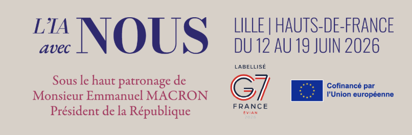
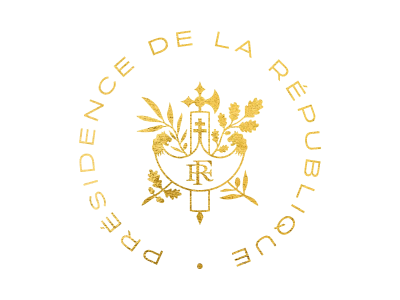

{{ p.n }}
{{ p.t }}
{{ p.d }}
{{ t.heroSub }}
“{{ t.manifesto }}”

{{ t.everyoneBody }}
{{ p.d }}
{{ t.wefBody }}

Since 2016, I’ve been a public advocate for an ethical, responsible approach to AI — rooted in the conviction that every technological advance must serve people first, and that those who build AI carry a duty of care toward society.
“Technology is never neutral. The question is not whether AI is powerful, but whether it is built — and used — for the benefit of humanity.”
I co-founded Everyone.AI in 2024 — a nonprofit anticipating the opportunities and risks of AI for children — notably through “The Future of Child Development in the AI Era” (2024) and SRL4Children, an open-source agentic framework that gives the AI tools children use a safety seatbelt — measurable, auditable guardrails for safe, supportive learning. In 2026, we presented this work on the Solution Stage of the United Nations’ AI for Good Global Summit in Geneva.
Inspired by the Hippocratic Oath, the Holberton-Turing Oath sets out the ethical commitments of those who design and deploy AI. As co-author, I helped establish early guard-rails for human-centric AI — developed and used responsibly, for the benefit of humanity.
Read the oath ↗AI augments people; it does not replace them. Every system should expand human capability and dignity.
No black boxes. Observability, traceability and explainability by design — especially for decision-critical AI.
Whoever builds it answers for what they ship. Clear governance, defined roles, alignment with the EU AI Act and GDPR.
Fight bias and make knowledge accessible to all — AI for the many, not the few.
Anticipate risk before deployment: robustness, security, drift management and guard-rails.
Direct AI toward science, education and the common interest — for the benefit of humanity.
Invited expert at the WEF workshop shaping “Best Practices for Child-Safe AI Systems” — a white paper setting a shared baseline for the global AI ecosystem — alongside AWS, TikTok, UNESCO, Thorn, Stanford, Ofcom and the European Commission (23 July 2026).
Co-presenting “Defining & Scaling Beneficial AI for Children” with Dr. Mathilde Cerioli — introducing AïA Safety Builder, Everyone.AI’s framework for AI that supports child development (9 July 2026, Geneva).
Under the high patronage of President Emmanuel Macron, with Xavier Bertrand (Hauts-de-France). Lille · 12–19 June 2026.
One of the three co-initiators of AI4Humanity; reserve member of the European Commission’s High-Level Expert Group on AI.

Contributed to the France IA strategy (2017) and the Villani report (2018) that anchored France and Europe’s national AI strategy.
Invited guest on AI & Ethics at the Institute for Advanced Study, Princeton.
Co-author of the Holberton-Turing Oath — an ethical oath for AI practitioners.

Get to know my story, my values and my work through your own AI assistant. Have a project? It will help you get in touch — and I’ll tell you honestly what it takes to get there. No hype, no endless POCs.
Your assistant reads my public brief and answers your questions: my story, my values, my projects, my recent talks. Claude and ChatGPT open with the prompt ready — just press Enter.
Thank you — Gregory’s team will get back to you shortly.
Ask your AI about Gregory
Explore my story, my work, my recent talks and what I stand for — in a conversation with your own AI assistant.